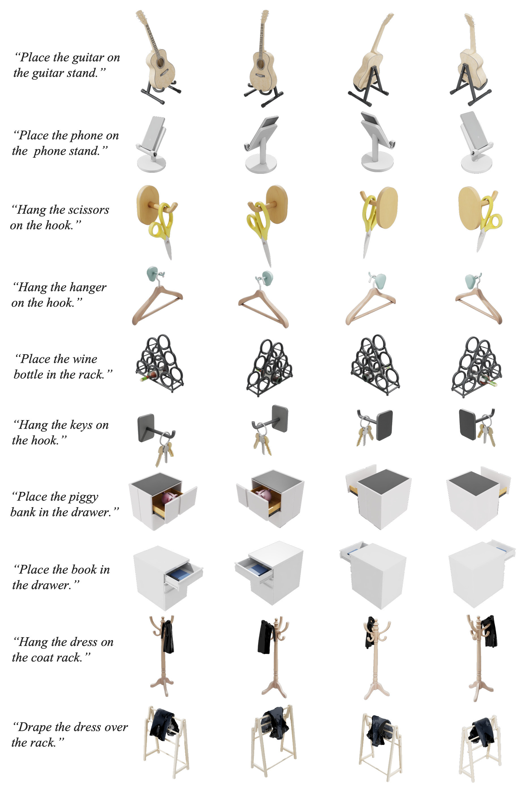
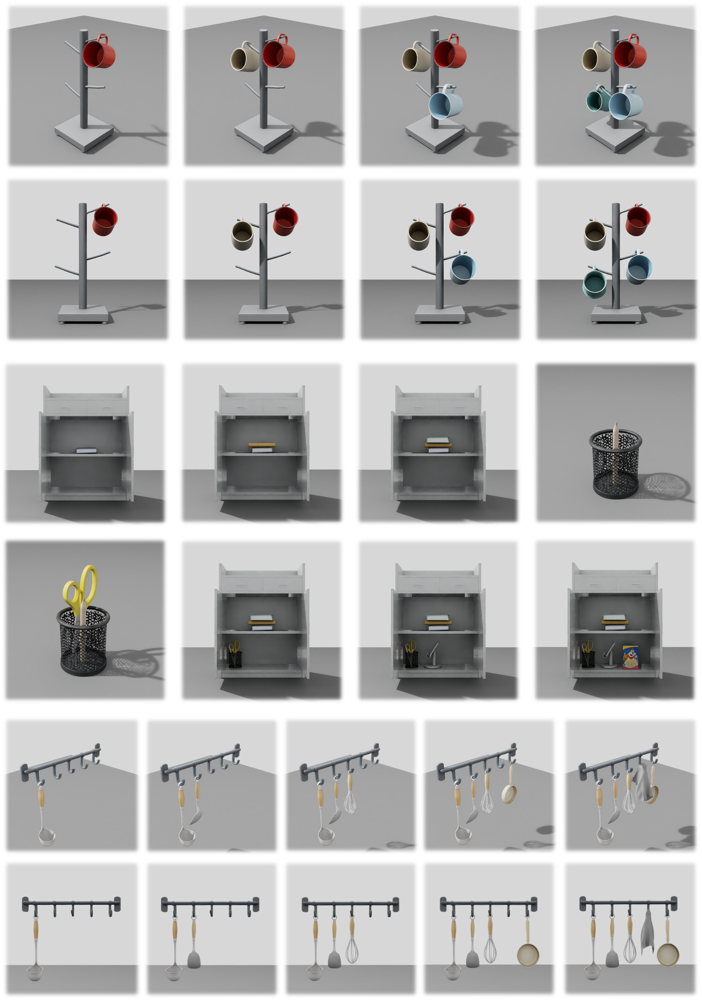

3D object composition is pivotal to digital content creation and robot simulation, while also serving as a critical testbed for physical intelligence in foundation models. Previous methods either leverage large language models to directly predict object coordinates, or utilize generative diffusion priors to synthesize composite images for visual alignment, both of which rely on static priors in digital spaces. However, these methods consistently struggle with complex compositions such as precise hanging, gravity-driven settling, and hidden containment, as these tasks require interactive construction processes involving global planning, fine-grained alignment, and physical simulation. To address these challenges, we propose PhySGA, a Physics-Space Grounded Agentic Framework for 3D composition via agent exploration and physical simulation, enabling the universal interactive assembly of rigid, articulated, and deformable objects. We design a collaborative feedforward-feedback architecture in which an Assembly Agent performs global step planning and coarse adjustment, while a Critic Agent diagnoses simulated outcomes and performs fine-grained closed-loop correction. Action Routers map semantic decisions onto executable physical primitives, and a task-specific Self-Evolving Skill Library distills successful interaction experience for reuse. Extensive experiments in Isaac Sim demonstrate that PhySGA substantially improves relation fidelity, physical plausibility, and visual quality over existing methods.

Overview of PhySGA. The Assembly Agent uses geometric and kinematic reasoning to produce a global construction plan and execute metric-grounded coarse adjustments. Physical simulation then exposes contact and stability outcomes. The Critic Agent diagnoses failures and performs pixel-grounded fine-grained corrections, while Action Routers translate both agents' semantic decisions into executable simulator commands. A Self-Evolving Skill Library preserves successful interaction experience for later tasks.


@misc{lyu2026physga,
title={PhySGA: A Physics-Space Grounded Agentic Framework for Generalizable and Interactive 3D Composition},
author={Weichen Lyu and Chong Xia and Mingyu Dong and Long Xu and Shengjun Zhang and Yueqi Duan},
year={2026},
eprint={2610.20560},
archivePrefix={arXiv},
primaryClass={cs.AI},
url={https://arxiv.org/abs/2610.20560},
}